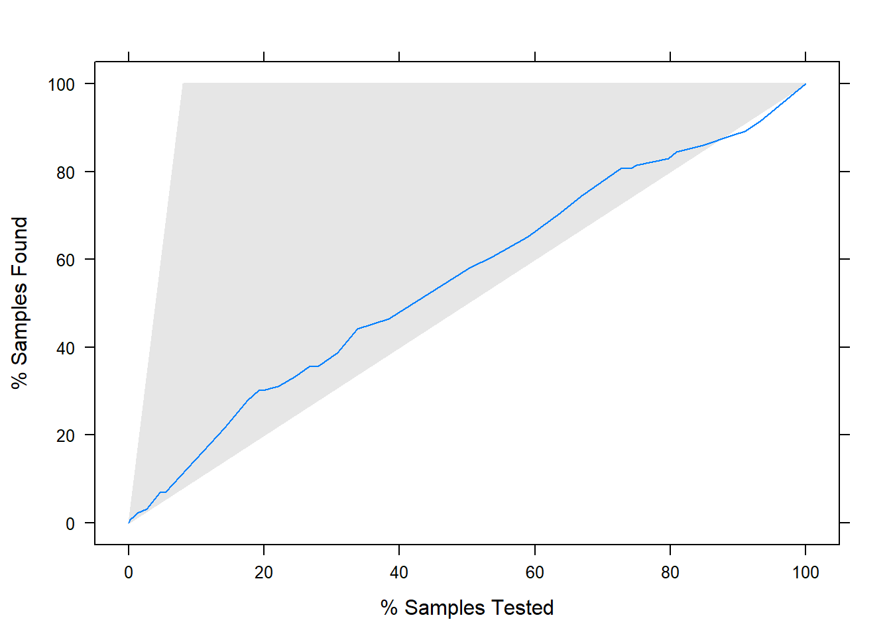

8 Data preparation and preprocessing
8.1 Packages
8.2 Data loading and inspecting
After downloading data locally we load in data by usingreadLines() function:
Let us have a first at the dimension of our data:
## [1] 116341Our data set is currently in a form of a vector with 116341 elements. Obviously, this is not the optimal form of the data we would like to work with. That is why we need to work around this data set to make it more conveniet for further analysis.
## [1] "product/productId: B00064C0IU"
## [2] "product/title: Oscar Eau de Toilette for Women by Oscar de La Renta"
## [3] "product/price: 24.19"
## [4] "review/userId: A1FWT811DSZLC8"
## [5] "review/profileName: Heidi M"
## [6] "review/helpfulness: 0/0"From the structure of our data set, we see that all values are stored in the first column. Thus, we would need to manipulate data in order to be able to process it further.
What we can already do is to remove all fields with no characters:
Then we can convert it to data frame:
One of the critical steps is separating the column to multiple columns:
# Separate one column to two (":" separator)
my_data <- separate(my_data,col = product, into = c("Info","Product"), sep = ":")Inspecting first 10 values:
## Info
## 1 product/productId
## 2 product/title
## 3 product/price
## 4 review/userId
## 5 review/profileName
## 6 review/helpfulness
## 7 review/score
## 8 review/time
## 9 review/summary
## 10 review/text
## Product
## 1 B00064C0IU
## 2 Oscar Eau de Toilette for Women by Oscar de La Renta
## 3 24.19
## 4 A1FWT811DSZLC8
## 5 Heidi M
## 6 0/0
## 7 3.0
## 8 1360368000
## 9 doesn't last
## 10 very light scent that doesn't last very long. pretty bottle but I was hoping for more of a freesia scent. which it was not.The data set is loaded in .txt format, and all values were stored in two columns, which makes it a bit challenging to work with. In the following sections we will undertake data manipulation in order to bring the data set in more suitable form.
First, we will convert it from the current long-format (105765, 2)to the wide-format, where each column will represent a product, and each row a feature:
#Converting long format to wide
my_data <- my_data %>%
group_by(Info) %>%
mutate(Order = seq_along(Info)) %>%
spread(key = Order, value = Product)
head(my_data)## Warning: `...` is not empty.
##
## We detected these problematic arguments:
## * `needs_dots`
##
## These dots only exist to allow future extensions and should be empty.
## Did you misspecify an argument?## # A tibble: 6 x 10,578
## # Groups: Info [6]
## Info `1` `2` `3` `4` `5` `6` `7` `8` `9` `10` `11` `12`
## <chr> <chr> <chr> <chr> <chr> <chr> <chr> <chr> <chr> <chr> <chr> <chr> <chr>
## 1 produ~ " 24~ " 24~ " 24~ " 24~ " 5.~ " 5.~ " un~ " un~ " un~ " un~ " un~ " un~
## 2 produ~ " B0~ " B0~ " B0~ " B0~ " B0~ " B0~ " B0~ " B0~ " B0~ " B0~ " B0~ " B0~
## 3 produ~ " Os~ " Os~ " Os~ " Os~ " Op~ " Op~ " Ar~ " Ar~ " Ar~ " Ar~ " Ar~ " Ar~
## 4 revie~ " 0/~ " 0/~ " 0/~ " 0/~ " 1/~ " 0/~ " 0/~ " 0/~ " 0/~ " 3/~ " 2/~ " 2/~
## 5 revie~ " He~ " Do~ " M.~ " Ki~ " Pl~ " LA~ " JB~ " K.~ " Vi~ " E.~ " Br~ " To~
## 6 revie~ " 3.~ " 5.~ " 1.~ " 5.~ " 5.~ " 5.~ " 2.~ " 5.~ " 5.~ " 5.~ " 5.~ " 5.~
## # ... with 10,565 more variables: `13` <chr>, `14` <chr>, `15` <chr>,
## # `16` <chr>, `17` <chr>, `18` <chr>, `19` <chr>, `20` <chr>, `21` <chr>,
## # `22` <chr>, `23` <chr>, `24` <chr>, `25` <chr>, `26` <chr>, `27` <chr>,
## # `28` <chr>, `29` <chr>, `30` <chr>, `31` <chr>, `32` <chr>, `33` <chr>,
## # `34` <chr>, `35` <chr>, `36` <chr>, `37` <chr>, `38` <chr>, `39` <chr>,
## # `40` <chr>, `41` <chr>, `42` <chr>, `43` <chr>, `44` <chr>, `45` <chr>,
## # `46` <chr>, `47` <chr>, `48` <chr>, `49` <chr>, `50` <chr>, `51` <chr>,
## # `52` <chr>, `53` <chr>, `54` <chr>, `55` <chr>, `56` <chr>, `57` <chr>,
## # `58` <chr>, `59` <chr>, `60` <chr>, `61` <chr>, `62` <chr>, `63` <chr>,
## # `64` <chr>, `65` <chr>, `66` <chr>, `67` <chr>, `68` <chr>, `69` <chr>,
## # `70` <chr>, `71` <chr>, `72` <chr>, `73` <chr>, `74` <chr>, `75` <chr>,
## # `76` <chr>, `77` <chr>, `78` <chr>, `79` <chr>, `80` <chr>, `81` <chr>,
## # `82` <chr>, `83` <chr>, `84` <chr>, `85` <chr>, `86` <chr>, `87` <chr>,
## # `88` <chr>, `89` <chr>, `90` <chr>, `91` <chr>, `92` <chr>, `93` <chr>,
## # `94` <chr>, `95` <chr>, `96` <chr>, `97` <chr>, `98` <chr>, `99` <chr>,
## # `100` <chr>, `101` <chr>, `102` <chr>, `103` <chr>, `104` <chr>,
## # `105` <chr>, `106` <chr>, `107` <chr>, `108` <chr>, `109` <chr>,
## # `110` <chr>, `111` <chr>, `112` <chr>, ...Since the column names are labeled with numbers, we will apply first row as a label for the corresponding column name:
Delete rows with at least 1 NAs:
Trim white space at the beginning or ending the string:
my_data$`review/userId`<- trimws(my_data$`review/userId`)
my_data$`product/productId`<- trimws(my_data$`product/productId`)
my_data$`product/price`<- trimws(my_data$`product/price`)
my_data$`product/title`<- trimws(my_data$`product/title`)Filtering out reviews with unknown userID and productId:
my_data<-filter(my_data,`review/userId`!="unknown" & `product/productId`!="unknown" & `product/price`!="unknown")Correcting column classes:
8.3 Exploratory data analysis
8.3.1 How many unique products are reviewed?
## [1] 928There are 928 products which were reviewed.
8.3.2 How many reviewers do we have?
## [1] 8002There are 8002 unique reviewers/customers who reviewed products.
8.3.3 How many scores do we have?
## [1] 8581There are 8581 ratings.
8.3.4 What is the distribution of ratings?
 Products seem to be favorably rated as the distribution of scores showes that the best score is the most frequent.
8.3.5 What is the average number of reviews per user?
## review/userId Freq
## A00275441WYR3489IKNAB: 1 Min. : 1.000
## A0353671240B3B6L8WKZB: 1 1st Qu.: 1.000
## A0793784FP3F6ZXZDTN6 : 1 Median : 1.000
## A10013UITIMJVI : 1 Mean : 1.072
## A1008GFLTBL76H : 1 3rd Qu.: 1.000
## A100VLYGYI6FXY : 1 Max. :37.000
## (Other) :7996It seems that users from our data set on average left a review only once. This might be an issue, as we would not be able to find much similarity among users.
8.3.6 What is the average score per user?
(grand.mean <-my_data %>%
group_by(`review/userId`) %>%
dplyr::summarise(Mean=mean(`review/score`)) %>%
mutate(Grand.mean=mean(Mean))%>%
head())## # A tibble: 6 x 3
## `review/userId` Mean Grand.mean
## <fct> <dbl> <dbl>
## 1 A00275441WYR3489IKNAB 5 4.19
## 2 A0353671240B3B6L8WKZB 5 4.19
## 3 A0793784FP3F6ZXZDTN6 5 4.19
## 4 A10013UITIMJVI 5 4.19
## 5 A1008GFLTBL76H 5 4.19
## 6 A100VLYGYI6FXY 4 4.19It seems that beauty products on Amazon are well received by users as the average score per user is quite high, at 4.1940927.